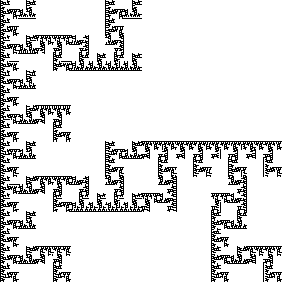
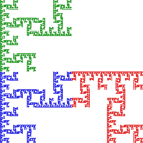

|  |  |
This fractal is connected: the blue part and green part have a commom point, and the blue part and the red part have a common point.
In fact, the blue and red parts have infinitely many points in common, and it is easy to see these form a loop (infinitely many loops, really) between the blue and red parts.
Self-similarity then guarantees each part contains an entire loop (half the size of the red-blue loop), then three loops half the size of that loop, and so on.
Return to Gasket Relatives.